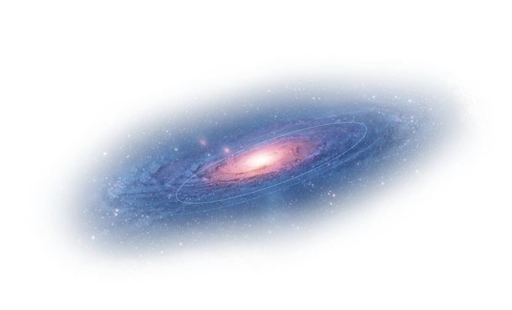
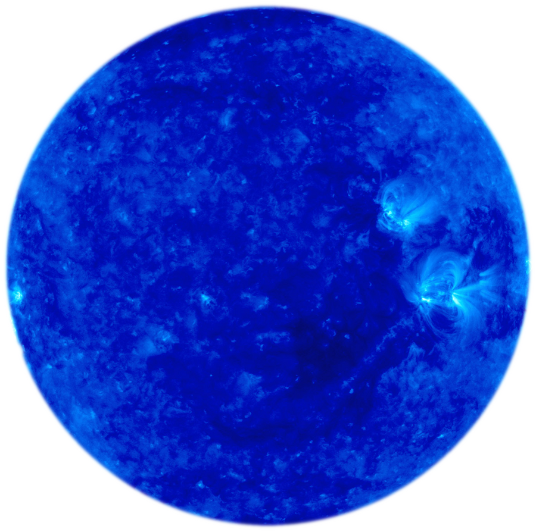

The universe
The universe is all of space and time and their contents, including planets, stars, galaxies, and all other forms of matter and energy. The Big Bang theory is the prevailing cosmological description of the development of the universe. According to this theory, space and time emerged together 13.787±0.020 billion years ago, and the universe has been expanding ever since the Big Bang. While the spatial size of the entire universe is unknown, it is possible to measure the size of the observable universe, which is approximately 93 billion light-years in diameter at the present day.

Black hole
A black hole is a region of spacetime where gravity is so strong that nothing – no particles or even electromagnetic radiation such as light – can escape from it. The theory of general relativity predicts that a sufficiently compact mass can deform spacetime to form a black hole. The boundary of no escape is called the event horizon. Although it has a great effect on the fate and circumstances of an object crossing it, it has no locally detectable features according to general relativity. In many ways, a black hole acts like an ideal black body, as it reflects no light. Moreover, quantum field theory in curved spacetime predicts that event horizons emit Hawking radiation, with the same spectrum as a black body of a temperature inversely proportional to its mass. This temperature is of the order of billionths of a kelvin for stellar black holes, making it essentially impossible to observe directly.
our planetary system
the big stars
black hole
satelit
mercury
smallest planet in our solar system
Radius: 2.439,7 km
Distance from Sun: 58 million km
Moons: no moons
Gravity: 3,7 m/s²
Tilt of Axis: 2°
Lenghts of Year: 88 days
Lenght of Day: 58d 15 h 30 min
Temperature: 354 degrees F
Last Planet: NONE
Next Planet: Venus
planet info text
The smallest planet in our solar system and nearest to the Sun, Mercury is only slightly larger than Earth's Moon. From the surface of Mercury, the Sun would appear more than three times as large as it does when viewed from Earth, and the sunlight would be as much as seven times brighter.
✘
venus
Earth’s closest planetary neighbor
Radius: 6.051,8 km
Distance from Sun: 108 million km
Moons: no moons
Gravity: 8,87 m/s²
Tilt of Axis: 177.3°
Lenghts of Year: 225 days
Lenght of Day: 23h 56m 4.1s
Temperature: 464 °C
Last Planet: mercury
Next Planet: earth
planet info text
It's a cloud-swaddled planet named for a love goddess, often called Earth’s twin. But pull up a bit closer, and Venus turns hellish. Our nearest planetary neighbor, the second planet from the Sun, has a surface hot enough to melt lead. The atmosphere is so thick that, from the surface, the Sun is just a smear of light.
✘
Radius: 6.371 km
Distance from Sun: 150 million km
Moons: our moon
Gravity: 9,807 m/s²
Tilt of Axis: 23.5°
Lenghts of Year: 365 days
Lenght of Day: 24 hours
Temperature: 57 degrees Fahrenheit
Last Planet: venus
Next Planet: mars
planet info text
Our home planet is the third planet from the Sun, and the only place we know of so far that’s inhabited by living things. While Earth is only the fifth largest planet in the solar system, it is the only world in our solar system with liquid water on the surface. Just slightly larger than nearby Venus, Earth is the biggest of the four planets closest to the Sun, all of which are made of rock and metal.
✘
Radius: 3.389,5 km
Distance from Sun: 228 million km
Moons: 2 Moons
Gravity: 3,721 m/s²
Tilt of Axis: 25°
Lenghts of Year: 687 days
Lenght of Day: 1d 0h 37min
Temperature: 0 °C
Last Planet: earth
Next Planet: jupiter
planet info text
Mars is a dusty, cold, desert world with a very thin atmosphere. There is strong evidence Mars was—billions of years ago—wetter and warmer, with a thicker atmosphere.
✘
jupiter
Jupiter has a long history of surprising scientists
Radius: 69.911 km
Distance from Sun: 778 million km
Moons: 79 moons
Gravity: 24,79 m/s²
Tilt of Axis: 3°
Lenghts of Year: 12 Years
Lenght of Day: 0d 9h 56min
Temperature:
Last Planet: mars
Next Planet: uranus
planet info text
Jupiter is more than twice as massive than the other planets of our solar system combined. The giant planet's Great Red spot is a centuries-old storm bigger than Earth.
✘
saturn
the second-largest planet in our solar system.
Radius: 58.232 km
Distance from Sun: 1.4 billion km
Moons: 62 moons
Gravity: 10,44 m/s²
Tilt of Axis: 27°
Lenghts of Year: 29 Jahre
Lenght of Day: 0d 10 h 34 min
Temperature: -140°C
Last Planet: jupiter
Next Planet: uranus
planet info text
Adorned with a dazzling, complex system of icy rings, Saturn is unique in our solar system. The other giant planets have rings, but none are as spectacular as Saturn's.
✘
uranus
Uranus is the seventh planet from the Sun
Radius: 25.362 km
Distance from Sun: 2.8 billion km
Moons: 27 moons
Gravity: 8,87 m/s²
Tilt of Axis: 97.77°
Lenghts of Year: 84.0205 Earth years
Lenght of Day: 0d 17 h 14 min
Temperature: -195°C
Last Planet: saturn
Next Planet: neptune
planet info text
Uranus—seventh planet from the Sun—rotates at a nearly 90-degree angle from the plane of its orbit. This unique tilt makes Uranus appear to spin on its side.
✘
neptune
Dark, cold, and whipped by supersonic winds
Radius: 24.622 km
Distance from Sun: 4.5 billion km
Moons: 14 moons
Gravity: 11,15 m/s²
Tilt of Axis: 28.32°
Lenghts of Year: 165 Earth years
Lenght of Day: 0d 16 h 6 min
Temperature: -214°C
Last Planet: uranus
Next Planet: NONE
planet info text
Neptune—the eighth and most distant major planet orbiting our Sun—is dark, cold and whipped by supersonic winds. It was the first planet located through mathematical calculations, rather than by telescope.
✘
brown dwarf
occupy a special position between stars and planets
mass: 13–80 times the mass of Jupiter
Lenghts of live: undefined
star: yes / no
Temperature: below about 3 million degrees
star info text
Brown dwarfs are celestial bodies that occupy a special position between stars and planets. Their masses are less than 75 times the mass of Jupiter and are therefore insufficient to trigger internal hydrogen fusion as in the lightest stars, the red dwarfs.
✘
red dwarf
Red dwarfs are the smallest stars
mass: 0,08 to 0,6 times the mass of sun
Lenghts of live: really long
star: yes
Temperature: between 2200 and 3800 Kelvin
star info text
Red dwarfs are the smallest stars with hydrogen burning taking place at their centers. About three quarters of all stars belong to this stellar class. They shine so faintly that not a single one can be seen from Earth with the naked eye
✘
White dwarf
A white dwarf is a small, very compact old star.
mass: 1.44 times the mass of sun
Lenghts of live: really long
star: yes
Temperature: between 10.000 und 100.000 Kelvin
star info text
A white dwarf is a small, very compact old star. Despite its high surface temperature, it only has a very low luminosity, so it lies far below the main sequence in the Hertzsprung-Russell diagram.
✘
Red Giant
A red giant is a star
mass: 0.8 to 8 times the mass of sun
Lenghts of live: really long
star: yes
Temperature: 2,200 to 3,200 degrees Celsius
star info text
A red giant is a star of large dimensions and therefore a celestial body of high luminosity compared to a main sequence star with the same surface temperature. Examples of this are some first-magnitude stars that already appear red with the naked eye
✘
blue HyperGiant
A blue supergiant is a hot, luminous star

mass: undefined
Lenghts of live: really long
star: yes
Temperature: undefined
star info text
a HyperGiant is a very rare type of star that has an extremely high luminosity, mass, size and mass loss because of its extreme stellar winds.
✘
yellow HyperGiant
A yellow supergiant is a hot, luminous star
mass: undefined
Lenghts of live: really long
star: yes
Temperature: undefined
star info text
a HyperGiant is a very rare type of star that has an extremely high luminosity, mass, size and mass loss because of its extreme stellar winds.
✘
red HyperGiant
A red supergiant is a hot, luminous star
mass: undefined
Lenghts of live: really long
star: yes
Temperature: undefined
star info text
a HyperGiant is a very rare type of star that has an extremely high luminosity, mass, size and mass loss because of its extreme stellar winds.
✘